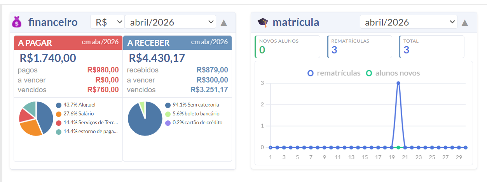

Desenvolvedora de Software
Desenvolvedora de software com experiência em backend e desenvolvimento web, atuando na construção de sistemas de gestão, automação de processos e análise de dados.
Projeto desenvolvido em contexto profissional com foco no monitoramento financeiro e acompanhamento de matrículas ativas em instituições de ensino.

Projeto adaptado para portfólio, com dados ajustados para fins demonstrativos.